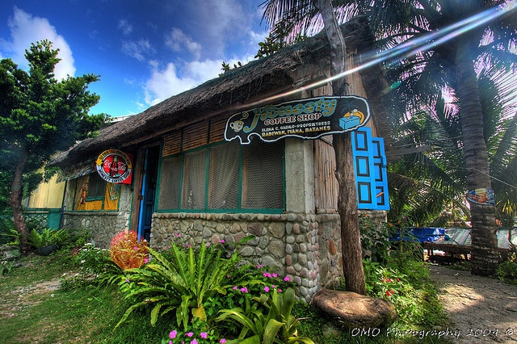

Flying Fish and Coconut Crab are the two most prized proteins native to Batanes.Dibang is the Filipino name for the migratory flying fish that spring out of the water and use their evolved fins to catch some air. You can go straight to the source, fishing boats, to buy your own dibang and have a local grill them for you along with some organic veggies grown and harvested on the island.
You and your group will jump in a local boat called a Faluwa on your way to Sabtan Island. From the water you’ll be capturing jaw-dropping views of the islands where you can see the topography of rolling hills against steep cliffs.
It’s like heaven on earth. Fundacion Pacita Lodge sits atop an emerald pasture overlooking the ocean. Every morning, you wake up surrounded by a landscape that simply commands your attention.
Mt. Iraya is the 1009-meter tall volcano that quietly sits in the town of Basco. Hikers and outdoor enthusiasts love Mt. Iraya as it’s not a very challenging mountain to climb, rather it’s a modest crawl through dense forests with crisp air. When you get to the top of the mountain you’ll find yourself inside the clouds which hug the rolling hills and turn the landscape into a dream-like world.

Nakubuang Beach is no stranger to international praise, including making CNN’s list of best beaches to visit and the ‘It’ destination on my paradise-seeker’s travel blogs. Why all the fuss? You just don’t find pristine beaches like Nakabuang anymore..
Restaurant, Bed & Breakfast, Spa, Wedding venue…. Sonya’s Secret Garden does it all and does it well. The setting is magical. Tucked in a tropical garden with flowers all around and teak wood furniture that seamlessly ties it all together, this is the best place in Tagaytay City to come for lunch.
It’s a stunning sight to see. The shores of Chadpidan Beach in Basco are comprised of boulders that have been expelled from nearby Mt. Iraya centuries ago. Since then, these boulders have slowly been polished down to smaller rocks by the waves of the South China Sea and are scattered below the overhanging cliffs.
Don’t miss this whimsical natural lagoon in Batanes. Quite the unexpected oasis, this turquoise lagoon is surrounded by green hills and huge volcanic boulders that is simply breathtaking.
Get a bite to eat and a piece of history in the same go. As the name suggests, Bunker’s Café used to actually be a bunker during the American occupation at the end of World War II. As a bunker, it sits atop a hill with marvelous views jetting off the cliff and into the ocean.
Honesty Coffee Shop might never survive in the city, but out here where life is slow, people are good, and nature provides- this coffee shop concept is doing just fine.Locals and visitors are welcome to come into the shop and pick up whatever goods they need without any salespeople or cashiers watching over. The customer is in charge of paying the exact amount, recording it in a book, and depositing their cash on the spot.



© Sernel Miranda Asunto (2019)